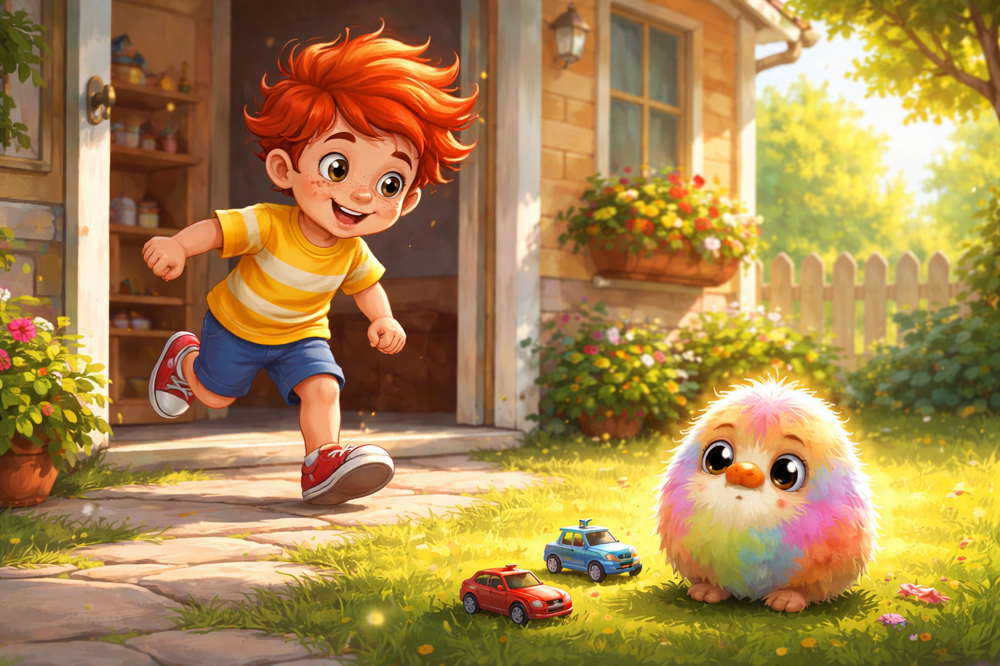
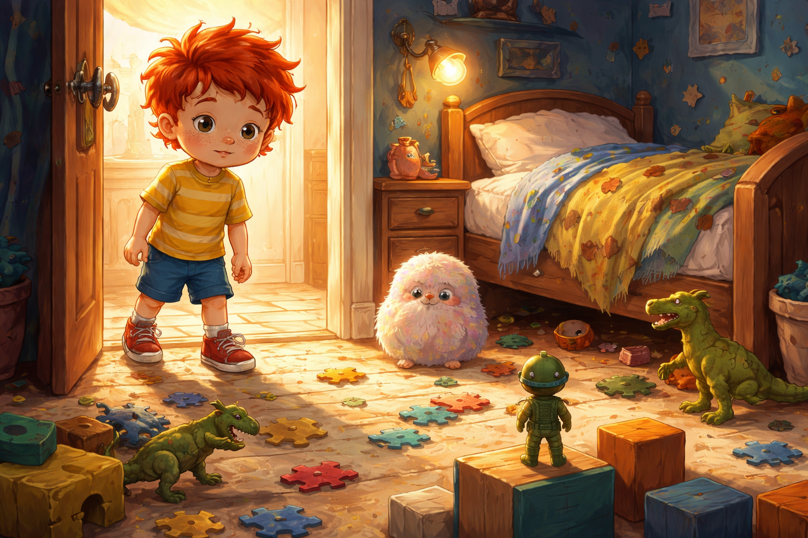
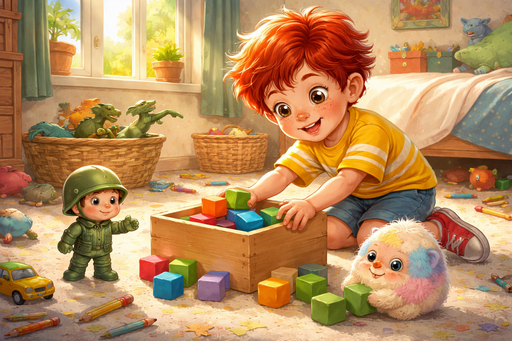
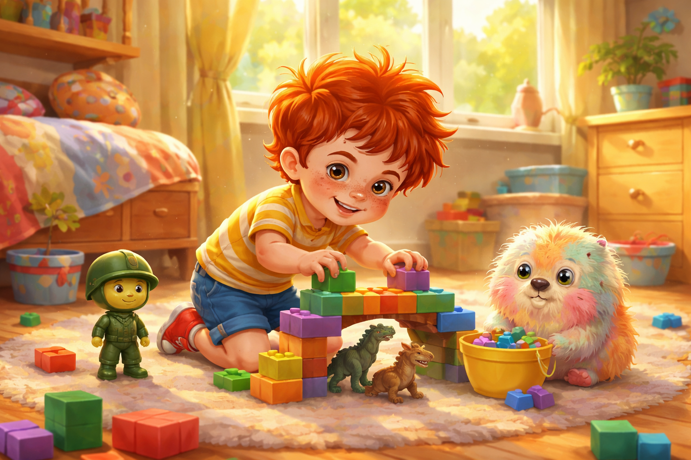
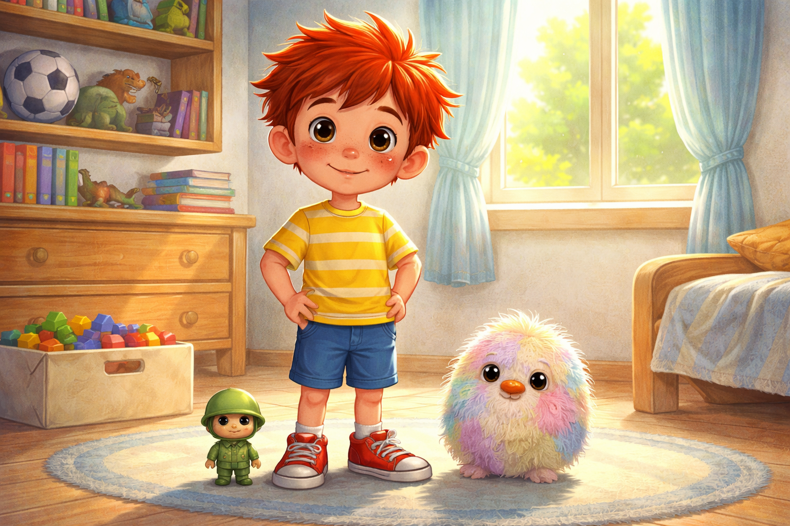
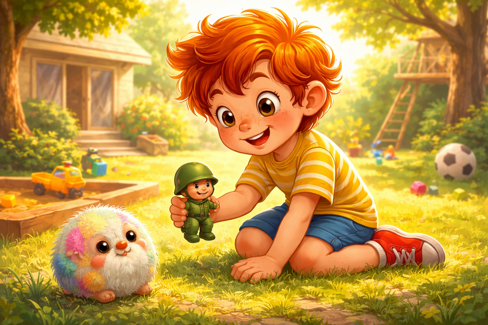

Палавко и забравеното обещание
Здравей, аз съм Палавко - и пакостта ми е суперсила!
Днес ще ти разкажа как Палавко забрави едно обещание, как това доведе до малка бъркотия и как с помощта на приятели и малко находчивост той научи защо е важно да държим на думата си.
Готов ли си? Хайде да започваме.
Забравеното обещание

Палавко играеше в стаята си с кубчета и динозаври. Слънцето влизаше през прозореца, а навън птичките пееха така, сякаш репетираха за концерт.
- Ура! - извика Палавко. - Днес ще построя най-високата кула на света!
Кулата растеше бързо. Първо беше до коляното му. После до корема. После почти до носа.
Но точно когато Палавко поставяше последното кубче, до купчината играчки се появи Рико - малкият зелен пластмасов войник. Стоеше изправен и гледаше сериозно.
- Палавко - каза Рико, - спомняш ли си обещанието, което ми даде вчера?
Палавко замръзна с кубчето в ръка.
- Обещание? Ах, да... хм... за какво беше?
В този миг кулата се разклати и няколко кубчета паднаха на пода.
- Каза, че ще почистиш стаята, преди да излезем навън, за да играем с Пук.
Палавко се почеса по главата.
- Ооо... да. Забравих. Но кулата ми е почти готова. Само да я довърша и тогава... ако ми се работи.
Рико въздъхна.
- Ако не почистиш, няма да можем да играем навън спокойно.
Палавко погледна стаята. Кубчета, динозаври и блокчета бяха навсякъде. Изглеждаха като малка цветна буря.
На път за двора

Палавко реши, че може би бурите се подреждат сами, ако човек просто излезе навън достатъчно бързо.
Затова хукна към двора.
Там го чакаше Пук - малко пухкаво и шарено същество с големи очи като копчета, което въртеше малки хвърчащи колички и подскачаше от нетърпение.
- Пук! - извика Палавко. - Хайде да играем!
Пук го погледна и сбърчи нос.
- Стаята ти е още разхвърляна, Палавко. Казаха ми, че имаш обещание.
Палавко погледна към къщата. После към двора. После към Пук.
Много му се играеше.
- Може би... може да се забавляваме малко преди чистенето - промърмори той.
Но Пук поклати глава.
- Няма да е забавно, ако обещанието чака само в стаята. Обещанията не обичат да ги забравят.
Палавко въздъхна толкова дълбоко, че едно листо на земята почти се обърна.
- Добре де. Ще се върна.
Състезание с препятствия

Палавко се върна в стаята и се огледа.
Първо всичко му се стори ужасно много. Кубчетата се търкаляха. Динозаврите сякаш нарочно падаха от рафта. Блокчетата бяха под леглото, в обувката и зад възглавницата.
- Ох, това е много по-трудно, отколкото си мислех - каза Палавко.
Рико се изправи върху едно синьо кубче.
- Тогава ще го превърнем в мисия. Кой ще подреди повече кубчета за една минута?
Очите на Палавко светнаха.
- Състезание?
- Състезание - потвърди Рико. - Но без хвърляне по тавана.
Тъкмо започнаха, когато Пук надникна през вратата.
- Мога ли да помагам?
- Ако имаш план - каза Палавко.
- Имам три! - усмихна се Пук.

Пук започна да подрежда кубчетата по цветове. Рико сочеше къде да отиват динозаврите. Палавко събираше блокчетата и измисляше мини-пътеки, мостове и гаражи.

- Вижте! - извика той, докато подреждаше две дъски и редица кубчета. - Аз правя мост за динозаврите!
- Не само чистим, а и строим - засмя се Пук.
- Мисията върви отлично - каза Рико важно.
Скоро стаята вече не изглеждаше като буря. Всяко подредено кубче беше малка победа. Всеки динозавър си намираше място. А Палавко усещаше как обещанието става все по-леко.
Урокът

След няколко минути стаята беше чиста и подредена.
Кубчетата стояха в кутията. Динозаврите бяха на рафта. Блокчетата не дебнеха ничии боси крачета.
Палавко се огледа и усети нещо странно.
Беше горд.
- Готово! - каза той. - Вижте колко е хубаво сега!
Пук се усмихна.
- Виждаш ли, Палавко? Когато държиш на обещанията си, игрите стават още по-приятни.
- И приятелите ти са щастливи - добави Рико.
Палавко кимна.
- Да. Обещанията не са само думи. Те са начин да покажеш, че се грижиш за другите.

После тримата излязоха навън.
Този път Палавко играеше с леко сърце, защото в стаята вече нищо не чакаше недовършено.
Поуката
Да изпълняваш обещанията си прави игрите по-забавни и показва уважение към приятелите ти.
Когато държиш на думата си, показваш, че можеш да бъдеш добър приятел.